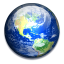
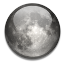
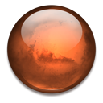

- 
Earth
- 
Moon
- 
Mars
Your internet browser does not support the HTML5 features required for Crater Impact. Consider installing one of the following bowsers.
- Internet Explorer 9+
- Firefox
- Chrome
- Safari
- Opera
Earth
Moon
Mars
Your internet browser does not support the HTML5 features required for Crater Impact. Consider installing one of the following bowsers.


Eilian Rodkerick - University of South Wales.
Robert Marcus, H. Jay Melosh & Gareth Collins.
Edward Gomez & Jon Yardley.
For further information on the D2E project, contact: info@faulkes-telescope.com